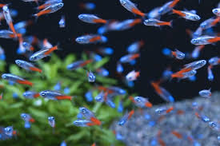
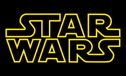

ネオンテトラ（学名：Paracheirodon innesi）は、カラシン目カラシン科の熱帯魚。発見は1936年。ネオンのようなメタリックブルーに光ってみえる体側が特徴であり、テトラと呼ばれる観賞魚類の中でも特に知られた種である。 近縁種としてカージナルテトラ、グリーンネオンテトラなどがある。 出典: フリー百科事典『ウィキペディア（Wikipedia）
2019年内に飼育を始めたいと切実に思っているが自宅のスペースやお金の都合上まだ飼うまでに至っていない

スター・ウォーズ（Star Wars）』シリーズは、ジョージ・ルーカスの構想を基にルーカスフィルムが製作するアメリカ合衆国のスペースオペラである。 「遠い昔、遥か彼方の銀河系」を舞台に、映画、アニメーション、小説、コミック、ゲームなど複数の媒体で展開される。世界で最も興行的成功を収めた映画シリーズ、シェアード・ユニバースの一つであり、『マーベル・シネマティック・ユニバース』に次ぐ世界歴代2位の興行収入を記録している[1]。 実写映画本編は、エピソード4・5・6→1・2・3→7・8・9と不規則な時系列順で公開されていることが大きな特徴である。その他、外伝的なスピンオフ作品が多数発表されている。 出典: フリー百科事典『ウィキペディア（Wikipedia）
来月12月20日には待望のシリーズ最新作【STARWARS スカイウォーカーの夜明け】が日米同時公開なので課題4をチェックするついでにぜひ劇場へ足を運んでください工藤先生、TAの池田さん。